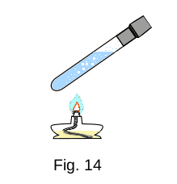
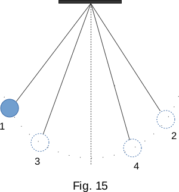

From the Heat phenomena
1. Mechanical phenomena
The large bodies surrounding us in physics are called macroscopic. Let's not specify at once how big a macroscopic body should be. Especially no exact border can be set anyway. It can be gas in a container, water in a glass, grain of sand, stone, piece of metal, globe, etc.
In the second book you learned about mechanical motion and Newton's laws. These laws allow us to calculate how macroscopic bodies or parts of them will move relative to each other. To do this, you have to know the initial positions, the initial velocities of the bodies and the forces of their interaction.
However, many questions are not answered by Newton's mechanic. Why, for example, the deformation produces elastic forces? Why bodies produce frictional forces when are moving in liquids and gases or slide over hard surfaces? Why does the water rises up in narrow tubes despite the force of gravity?
Newton himself understood it all well. He's got great words for it: "I do not know what I may appear to the world, but to myself I seem to have been only like a boy playing on the seashore, and diverting myself in now and then finding a smoother pebble or a prettier shell than ordinary, whilst the great ocean of truth lay all undiscovered before me."
In mechanics, the difficulties associated with the determination the nature of forces and their origin are not significant, because to calculate the trajectories motion of bodies it is enough to know only what the forces are quantitatively equal. And to know the value of forces, to determine when and how they work, it is possible not to understand the nature of forces, but only by having ways of measuring them. It's all true. But if we want to know how the world around us works, we cannot abandoned the task of studying the nature of forces.
And it's not just about forces. It's not clear from mechanics, for example, why there are three types of bodies: gaseous, not retaining their volume; liquid, volume retaining, but not form retaining; and solid bodies which retain their form. Why gases turn into liquids and liquids into solid bodies when they are cooling.
Now our task will be to learn to answer many of these and similar questions. The first step to achieving this goal is to get to know a large group of new physical phenomena.
2. Heat phenomena
The most significant and most noticeable phenomena after mechanical motion are heat phenomena. In the simplest form you learned them in the first book.
Heat phenomena are usually related to the heating or cooling of bodies and changes in their temperature.
Changes in the temperature of the surrounding air by 10 - 20 degrees cannot go unnoticed. And if the temperature of our body changes by one or two degrees, we are already sick.
The motion of the body usually does not cause particularly significant changes in it. But heating or cooling the body can change it beyond recognition. By heating the water, which is transparent, but still visible and easily sensed by our senses, we can turn it into almost intangible steam. Strong cooling will make a piece of ice out of the water. The change in the heat quantity received from the sun by our earth changes its entire appearance. With the onset of spring, nature begins to awaken, forests are dressed in leaves and meadows are green. In winter, however, a variety of summer colours are replaced by a more monotonous background, and the lives of plants and many animals stop.
The normal mechanical properties of bodies, such as elasticity, change very strongly when heating or cooling. A piece of rubber tube, which will not suffer from the fact that you will hit it with a hammer at room temperature, becomes as brittle as glass when it is heavily cooled. A slight blow will turn the rubber tube into small pieces. Only when heated does the rubber regain its elasticity.
All these phenomena, as listed above, as well as many others, are subject to certain laws. These laws are as accurate and reliable as the laws of mechanics, but greatly differ from the laws of mechanics in content and form.
The first thing we have to do is to learn how to describe the heat processes that happen to macroscopic bodies. Find laws that could explain the reasons for the changes that occur with bodies when the bodies themselves do not move, i.e. when nothing happens to them mechanically. These laws describe a new form of motion of matter - heat motion. We will find that heat motion is inherent in all bodies, regardless of whether they move in space or not.
The section of physics that studies heat phenomena is called thermodynamics.
The course of heat processes is directly related to the structure of the substance and its internal structure. After all, for example, the fact that the heating of paraffin by a few tens of degrees makes it liquid, and the heating of the iron rod at the same value does not affect it in any noticeable way (it only begins to burn the fingers), is certainly due to the fact that the internal structure of these bodies is different. That is why heat phenomena can be used to determine the overall structure of the matter. Conversely, certain ideas about the structure of the matter can shed bright light on the physical meaning of heat phenomena and give their deep visual interpretation. This is exactly the task of molecular-kinetic theory.
Finally, it is very important that the discovery of the laws to which heat phenomena are subject makes it possible to apply these phenomena in practice and technology with maximum benefit. Modern heat engines, refrigeration systems, liquefaction systems, etc. are based on knowledge of these laws.
Now let's move on to the quantitative description of heat processes. The first, most important and quite difficult step is to introduce the concept of temperature - the main characteristic of all heat phenomena.
3. Temperature. Thermal equilibrium
In geometry, you have one basic value - length. The other values: area and volume are derivatives. In kinematics one more value is added - time. Velocity, acceleration are derivatives. In dynamics the main additional value is mass. In the theory of heat phenomena, the one new basic value to be entered is temperature.
In addition to sensitive receivers that respond to touch, pressure and pain, there are receivers in the human skin that respond to external influences with a feeling of warmth and cold. With this in mind, all bodies can be arranged in a row in terms of their ability to make us feel warm or cold. The reason for this ability of bodies to affect the senses differently can be explained by various degrees of body heat - temperature. This is only a qualitative determination of the temperature, which does not include any indication of how the temperature is to be measured. You met with it in the first book. To find the exact definition of temperature it is necessary to define the concept of thermal equilibrium.
To find out your body temperature, hold the thermometer under your arm for 5-8 minutes. During this time, the mercury in the thermometer gradually heats up and the level rises. After the set time has elapsed, the thermometer will stop heating and you will determine the temperature along the length of the mercury column. The same thing happens when you measure the temperature of any body with any thermometer. The thermometer readings will remain the same for as long as the body temperature is the same.
Another example. Put an ice cube in the glass of water and cover it with a solid lid. The ice cube will melt and the water will cool down. When the ice melts, the water will start to heat up, and once it has reached ambient temperature, there will be no change inside the glass of water.
From these and other simple observations, we can conclude that there is a very general pattern of heat phenomena. Under unchanged external conditions, for the period of time the body spontaneously passes to the state of thermal equilibrium with surrounding bodies. In this state such values as volume and pressure remain unchanged. Thermal equilibrium of the body can be preserved for as long as it takes.
It is essential that if any body A ( for example, water in one cup, Fig. 2a) is in thermal equilibrium with another body C (thermometer), and body B (water in the other cup) is also in equilibrium with body C, then bodies A and B are also in thermal equilibrium. If the glasses are brought into contact (Fig. 2b), no changes will occur to the water inside them. That's why we can compare the state of thermal equilibrium of bodies without bringing them into direct contact and define the concept of temperature.
Zeroth Law of Thermodynamics
We say that two bodies A and B have the same temperature if each of them is in thermal equilibrium with the third body C. This body could be a thermometer. Conversely, if the bodies have the same temperature, it is possible to assert, without bringing them into direct thermal contact, that they are in a state of thermal equilibrium.
When contact is made between two bodies with different temperatures, their temperatures are leveled out. Just as pressure equality in two containers with the same gases means that when the containers are connected by a tube, the gas will not move from one container to another, temperature equality between the two bodies means that when a thermal contact is established between them, there will be no heat transfer from one body to another.
Temperature is the only magnitude that has the same value in any part of the system during thermal equilibrium. The volume of the different parts of the system with the hard partitions and the pressures inside them may vary. So, if you bring the ball from the street to the room, after a while the air temperature in the ball and the room will level off. The air pressure in the ball will still be bigger than the room pressure.
Temperature measurement devices - thermometers usually use the property of different liquids to change their volume when heated. The liquid must be such that different temperatures and volumes must correspond to different temperatures. This condition is not fulfilled for water. Indeed, when water is heated from 0 to 4°C, its volume decreases and then begins to increase.
It's not just the volume of the fluid that changes as the temperature changes. Gas pressure, electrical resistance of conductors and etc. also changes. All these phenomena can be used to measure temperature.
4. Equation of state
After we have learned what temperature is and how it can be measured, let's look at heat phenomena in more detail. Many phenomena can be discovered without any physical devices. An ordinary rubber ball, if you take seriously the observation of the air dynamics inside it, will allow you to come to important conclusions.
The ball, and therefore the air inside it, has a certain volume \( V \). This volume characterizes the condition of the air in the ball. Volume is one of the values that characterize the state of any macroscopic body.
The ball, like any other body, can be located in different external conditions. If you lift it up on a high mountain, the ambient air pressure on the ball-walls will decrease. After all, the atmospheric pressure decreases with height. This will cause the ball to inflate. The air pressure \(p\) inside it will become less as the volume increases. Conversely, if you squeeze the ball with your hands (carefully so that it does not explode), its volume decreases and the pressure inside increases.
The connection between the volume of air inside the ball and its pressure is, of course, obvious and understandable to everyone. All we have to do is try to notice the general pattern here.
The two values that characterize the condition of the air in the ball (volume and pressure) depend on each other. Pressure is another value (along with volume) that characterizes the state of the body.
Let's not forget the temperature. If you put an ice cube inside the ball and then inflate it, the following happens. The ice cube will melt and the ball will start to "lose weight". The air pressure in it and the volume will begin to decrease. It is clear it happens by changing the temperature in the ball.
From these simple observations, it can be concluded that there is a connection between the volume, pressure and temperature of the air in the ball. And this is true not only for the air in the ball, but also for any gaseous, liquid and solid body.
The equation that defines the relationship between temperature, volume and pressure of bodies is called the equation of state.
Each system - gas, liquid or solid - is characterized by its own equation of state. In some cases ( for instance, sparse gas) the equation of state is simple, in others (for instance, water) it is very complicated.
The knowledge of the equation of state is very important in the research of heat processes. It allows you to answer three groups of different questions in full or in part.
The equation of state makes it possible to determine one of the state values, for example temperature, if two other values are known. This is what is used in thermometers.
Knowing the equation of state, we can say how different processes will run under certain external conditions. For example, how would the gas pressure change during heating if its volume remains constant? What would happen to the gas pressure if its volume were to be increased with the same temperature, and etc.
Finally, knowing the equation of state, it is possible to determine how the state of the system changes if it performs work or receives heat from surrounding bodies.
All of this will be discussed later. First, let's see how we can experimentally identify the equation of state for gas.
5. Gas laws. Boyle-Mariotte law
The quantitative dependence of pressure, temperature and volume on each other is the simplest form for gases, especially for gases where pressure is not very high (does not significantly exceed the pressure in one atmosphere\(^1\)) and the temperature is not too low.
1 atmosphere unit of pressure is equal to pressure of \(760mm\) high mercury column. \(1atm \approx {103 000 {N \over mm^2}} \approx {10^5 {N \over mm^2}}\)
The main property of gases, which distinguishes them from liquids, is the ability of gases to expand unlimitedly. No matter how large the volume of the container is, the gas always puts pressure on all its walls. Experience has shown that if the gas temperature does not change, its pressure increases with decreasing volume. It is easy to see this by squeezing the volleyball or soccer balloon, which is weakly inflated with your hands: when you squeeze the balloon, the air pressure in it increases.

The pressure dependence on volume can be measured with the device shown in Figure 3. The hermetic bulb is connected to the manometer that registers the pressure inside the bulb. When the plunger is pressed, the volume inside the bulb changes. The volume can be seen with a ruler on the bulb. Changing the volume and observing the value of pressure, it is easy to make sure that for a given mass of gas how many times the volume decreases, as many times the pressure increases. The pressure a given mass of gas multiplied by its volume equals a constant if the gas temperature does not change.
Suppose the gas pressure was \(p_1\) at first and the volume \(V_1\), then, after compression, the pressure became \(p_2\) and the volume \(V_2\). Then
\(p_1V_1 = p_2V_2\)
or
\(pV = const\) if \(t = const\) (1-1)
This dependence was published back in the 17th century, almost simultaneously by two scientists: the Anglo-Irish scientist Robert Boyle and the French physicist Edme Mariotte. It was therefore called the Boyle–Mariotte law.
The process of changing the state of the system at a constant temperature is called isothermal.
Graphically, the dependence of gas pressure on volume is represented by curves called isotherms (Fig. 4).
Different temperatures correspond to different isotherms, in Figure 4 \(t_2 > t_1\). According to the Boyle-Mariotte law the gas isotherma express inversely proportional relation between pressure and volume \(p = \frac{1}{V} \). In mathematics, this kind of curve is called a hyperbola.
The isothermal process can only occur when it has a good heat exchange between the gas container and the thermostat - system that has some means of regulating the temperature. An atmosphere can also be used as a thermostat if the air temperature remains the same for a long time.
6. Charles's law

Charles's law defines direct proportion relation between the gas volume and temperature at a constant pressure. This relation can be found in experiment by observing the change in the volume of gas with changes in the temperature in the gas container. The container has vertical walls and is covered by a heavy piston that can move with very little friction (Fig. 5). The gravity \(mg\) and atmospheric pressure force \(p_0S\) acting on the piston determines a constant pressure \(p\) inside the gas that is independent of its volume:
\(p = {mg \over S} + p_0\)
\(S\) is the piston square.Let's mark by \(V_0\) the volume of gas at temperature \(t=0 ^0С\). Observations show that the volume of gas \(V\) at constant pressure increases linearly with temperature. The relative change in volume \(({{V-V_0} \over V_0}) \) is directly proportional to the temperature, that is
\({{V-V_0} \over V_0} = kt \)
This equation can be written as
\( V = V_0(1 + kt) \) (1-2)
This dependence of volume on temperature is called Charles's law.
The \(k\) coefficient is called the thermal coefficient of volume expansion. It is numerically equal to the relative change in the volume of gas when it heats from \(0\) to \(1 ^0C\). Test has shown that the volume all gases increases or decreases by \(1/273\) times the volume, which each gas occupied at \(273 K (0 ^0C)\), if the temperature changes by \(1 K\).
Charles's law can be verified with the device shown in Figure 5. To do this, we should mark the pressure and measure the gas temperature and volume in the container. Then we need to heat the gas. Move the piston up and down to make sure the pressure reading the same as before. Measure gas temperature and volume again. After that, change the temperature again, reach the initial pressure value, and measure temperature and volume. In this way, the equation (1-2) can be seen to be fair.
The process of gas volume change by temperature change at constant pressure is called isobaric. Graphically, this dependence is represented by straight lines - isobars (Fig. 6, p2 > p1). At temperatures close to \(-273 ^0C\), a solid straight line is replaced by dotted line, as the substance at such low temperatures is no longer in a gaseous state and the law (1-2) is not correct.
7. Dalton's law
In experiments, it's more often not using a pure gas like oxygen, hydrogen, etc., but a mixture of gases. Atmospheric air, in particular, is a mixture of nitrogen, oxygen and many other gases. Each of the gases in the mixture makes its own "contribution" to the total pressure on the walls of the container. The pressure, that each of the gases in the mixture would have if the remaining gases were removed from the container, were called partial (i.e. private) pressure.
The simplest assumption that can be made is that the pressure of the gas mixture \(p\) equals the sum of the partial pressures of all gases \(p1, p2, p3, \dots \)
\( p = p1 + p2 + p3 \dots \) (1-3)
English chemist Dalton experimentally found that for fairly rarefied gases, it is true. The law (1-3) is called the Dalton law.
8. Avogadro law
All the gas laws discussed could be formulated without referring to the molecular structure of the gases. When formulating the next gas law, the Avogadro law, it should be assumed that gas consists of separate molecules.
The masses of individual molecules are very small. Therefore, it is convenient to use relative values, not absolute values expressed in kilograms or grams, but relative values. By definition, the molecular mass of a substance is defined as the relation of the mass of a molecule of that substance to \(1 \over 12\) of the mass of the carbon atom.
From the course of chemistry it is known that the amount of grams (or kilograms) of substance, numerically equal to its molecular weight, is called a gram-molecule or mole (respectively, a kilogram-molecule or kilo-mole) and is denoted as \(\mu \). If the mass of the molecule of the substance is denoted as \(m\), and the mass of the carbon atom \(m_0\), then according to the definition
\( \mu = {m \over {{1 \over 12} m_0}} \)(1-4)
In order to find out what the mole of a given substance is equal, it is required to know the molecular composition of the substance and the atomic masses of the atoms entering the molecule. For example, the mole of carbon dioxide \(CO_2\) is 44 g/mol, because the atomic mass of oxygen is 16 and carbon is 12.
The Italian chemist Avogadro has experimentally found that under the same condition of temperature and pressure, equal volumes of different gases contain the same number of molecules (or in other words moles (the amount of substance of the gas) of different gases at the same conditions occupy the same volumes).
The law can be written as:
\( {V \over n} = k \)
where\(V\) is the volume of the gas;
\(n\) is the amount of substance of the gas (\(m \over \mu \)measured in moles);
\(k\) is a constant for a given temperature and pressure.
In particular, at a pressure of \(p =1\;atm\) and \(t =\,0^0\;C\), the volume of one mole of any gas is equal to \(V_{0\mu} = 22.4\;liters/mol = 22.4\;m^3/kmol\).
Avogadro number. It follows from the definition of mole that the number of molecules in a mole of any substance is the same. This number is called the Avogadro number.
The number of molecules in the mole is equal
\( N_A = {\mu \over m} \)
where\(m\) is the mass of one molecule in grams.
Using the definition of \(\mu\) (1-4), we get:
\( N_A = {m \over {{1 \over 12} m_0m}} = {1 \over {{1 \over 12} m_0}} \)(1-5)
This value is the same for any substance.
The Avogadro number can be determined by measuring the mass of the carbon atom (or some other atom) in grams. Methods for measuring the masses of individual atoms are well developed. They are based on the displacement of the ion beam (group of atoms that bears one or more positive or negative electrical charges) by an electromagnetic field.
Measurements give a mass of carbon atom \(m_0 = 1.995 \cdot 10^{-23} \, g\)
From here, according to (1-5)
\( N_A = 6.02 \cdot 10^{23} \, mole^{-1} \)
There are other methods of determining the Avogadro number that are not related to the mass measurement of individual atoms. They all give the same result.
9. Absolute temperature
Charles's law takes a particularly simple form if a new temperature scale is introduced instead of the Celsius scale. Let the temperature \(T\) on the new scale be related to the Celsius temperature \(t\) by the equation
\( T = t \, + \, 273^0 \)(1-6)
Then, considering that the thermal coefficient of volume expansion \(k = {1 \over 273} \, degrees^{-1}\), the Charles's law (1-2) can be written in the form:
\( V = V_0(1 + kt) = V_0 {\Big[1 + k {\left( T - {1 \over k } \right)} \Big]} = V_0kT\) (1-7)
The temperature determined by the equation (1-6) is called the absolute temperature. The absolute temperature scale is called the Kelvin scale by the name of the English scientist who introduced it.
Zero temperature on the Kelvin scale is called absolute zero temperature, \( -273^0 \, C \). None of the bodies, as we will see later (see section, 32), can be cooled down below absolute zero. That is why the absolute temperature scale is not as arbitrary as the Celsius scale.
For now we introduced an absolute temperature scale quite formally. In the chapter of molecular-kinetic theory it will be shown that the absolute temperature is directly related to the average kinetic energy of atoms and molecules. At T=0 the thermal motion of atoms and molecules stops.
10. Ideal gas equation of state
All gases are subject to the basic gas laws only approximately, and less precisely if higher the density of gas and lower the temperature. Gas, which would be exactly subject to the gas laws established in sections 5-8, is called ideal. All real gases are more or less different in their properties from the ideal gas. Experiments show that hydrogen is the closest to ideal gas.

Using gas laws, we can get an ideal gas equation of state, i.e. an equation which connects all three values \(p\), \(V\) and \(T\) that characterize the state of a given mass \(m\) of a certain gas.
Suppose that in the initial state 1 some mass of gas \(m\) has the pressure \(p_1\), volume \(V_1\), and temperature \(T_1\) (Fig. 7). Then the gas goes to a new state 2, at which pressure, volume and temperature have new values \(p_2\), \(V_2\), \(T_2\). What is the relationship between these three values in the initial and final states?
Let's pass gas state 1 to state 2 in two steps. First, at a constant pressure of \(p_1\), we will change the gas temperature to \(T_2\). The volume of it will be equal to some new value of \(V{'}\). Then, isothermally, i.e. at \(T_2 = const\), we transfer the gas to the final state with the pressure \(p_2\), and the volume \(V_2\).
According to Charles's law (1-7) the relation of volume \(V\) to temperature \(T\) at the given pressure is the same, then
\( {V{'} \over T_2} = {V_1 \over T_1} \)
or\( V{'} = {V_1 {T_2 \over T_1}} \) (1-8)
Next, we use the Boyle-Mariotte law (1-1)
\( p_1 V{'} = p_2 V_2 \) (1-9)
By replacing \( V{'} \) in equation (1-9) from equation (1-8), we get
\( {p_1 V_1 \over T_1} = {p_2 V_2 \over T_2} \)
and this result does not depend on the way of transition from the initial state 1 to the final state 2. We come to the conclusion
For a given mass of gas, the ratio of pressure and volume to absolute temperature is a constant value which is independent from state of gas, where gas is located
\( {p V \over T} = k = const \) (1-10)
Equation (1-10) is called the Clapeyron equation and it is one of the forms of the ideal gas equation of state. Constant \( k \) depends on the mass and type of the gas.
From equation (1-10), when the gas is heated in a hermetically closed container (Fig. 8) gas pressure will increase proportionally to the absolute temperature if the volume does not change
\( p = {k \over V} T \)
This dependence of gas pressure from temperature at a constant volume is called Gay-Lussac's law. In order to test this law by experiment, it is necessary to heat the gas in the container with observing changes in pressure and temperature. The process is called isocharian and the lines that represent the pressure dependence on temperature of a given gas mass are called isochoric. (Fig. 9, where \( V_1 < V2 \))
Using the Avogadro law, we can find the dependence of constant k from the gas mass and its molar mass. If the mass of the gas is equal to one mole, then at \(p_0 = 1 \, atm \) and \( T_0 = 273^0 \, K\) the volume of any gas \(V_{0\mu} = 22.4 \, l/mol \) (index \( \mu \) indicates that the mass of the gas is equal to one mole). Hence, mole for any gas
\( {p V_\mu \over T} = {p_0 V_{0\mu} \over T_0} = {{1 \, atm \, \times \, 22.4 \, l} \over {273 \, K \, \times \, mol}} = R \) (1-11)
The \(R\) constant is the same for all gases and is called a universal gas constant. Its value depends only on the selection of the unit system
\( R = 0.082 {{atm \, l} \over {K \, mol}} = 8.31 \times 10^7 {erg \over {K \, mol}} \)
The International System of Units (SI)
\( R = 8.31 \times 10^3 {J \over {K \, kmol}} \)
If the mass of the gas is not one mole, but a certain number \( n = {m \over \mu} \), then at the same pressure and temperature as for one mole, the volume
\( V = V_\mu n = {m \over \mu} V_\mu \)
Multiplying equation (1-11) by \( m \over \mu \), we get the molar form of the ideal gas equation of state.
\( p V = {m \over \mu} R T \) (1-12)
The dependence of the equation of state from gas type appears only through its molecular mass. All main gas laws are presented in equation of state (1-12). When considering a mixture of gases, it is also necessary to use Dalton's law. This law, together with equation (1-12), makes it possible to find an equation of state for any mixture of gases.
11. Equilibrium (reversible) and non-equilibrium (irreversible) processes
We got to know different processes: isothermal (temperature is constant), isobaric (pressure is constant) and isochoric (volume is constant). At the same time, one of the most important circumstances was not sufficiently emphasized. It was assumed that all these processes proceeded very slowly. For example, gas compression in the cylinder runs so smoothly that at any time a new state of equilibrium with new values of pressure and volume can be established. Such slow processes are called equilibrium processes.
If, after slow compression, the gas is allowed to expand slowly, it passes through the same sequence of equilibrium states as in compression. For this reason, equilibrium processes are also called reversible.
The states of heat equilibrium and reversible processes are primarily the subject of study in the theory of heat phenomena. In this case, the trends are the simplest.
The process of state change, followed by imbalance in the system, is called non-equilibrium. Let the piston compress the gas in the cylinder very quickly. Then the equilibrium between the individual parts of the gas will be disturbed, and only after some time the gas will move to a new equilibrium state. This process is irreversible: with rapid compression, the pressure under the piston is higher at first than in the rest of the cylinder, while with rapid expansion it is lower, i.e. the gas states at compression and expansion are different.
Real processes are not infinitely slow, and in fact they are all irreversible. The idea of a reversible process is the same idealization of real processes as, for example, the movement of an absolutely solid body or the flow of an ideal fluid in mechanics. If real processes are slow enough, they can be considered reversible with a good approximation.
12. Work in Thermodynamics
Now we will learn more about the process of changing the state of the body or body system. There are two significantly different types of effects that lead to changes in the state of bodies. First of these is to perform the work.
Assume that the system under consideration is the gas in the cylinder under the piston (Fig. 10). You can change the volume, pressure and temperature of the gas by moving the piston down. In this case, the change in gas state is a result of macroscopic movement of the body (piston) acting on the system. In this case, the force with which the piston acts on the gas, performs the work. Let's calculate this work.
From the gas side, the force acts on the piston
\( F = pA \) (1-13)
where \(p\) is the gas pressure, \(A\) is the piston area. The same magnitude, but opposite force affects on the gas from the piston side.
If the piston moves to a small section h, the pressure can be considered constant, and then the elementary work performed on the gas is equal to
\( \Delta W = pA \Delta h \)
But \( A \Delta h = V_1 - V_2 \), where \(V_1\) is the initial volume and \(V_2\) is the final volume of the system. If the volume change writes as \(\Delta V = V_2 - V_1 \), then \( A \Delta h = \Delta V \). From this, the work connected with the system volume change follows
\( \Delta W = -p \Delta V \) (1-14)
It follows that when the gas is compressed \( \Delta V < 0 \), the external force does a positive work. When expanding \( \Delta V > 0 \), this work is negative.
Equation (1-14) defines the work done on gas. The work performed by gas \( \Delta W'\) has the opposite sign, \( \Delta W' = - \Delta W \).
Equation (1-14) is valid not only for compression or expansion of gas in the cylinder, but also for changes in the volume of any system on value \( \Delta V \).
To calculate the work when changing the volume to a finite (not as small as we like) value we need to sum up the elementary work (1-14). Only if \( p = const \) equation (1-14) is valid for large volume changes.
The work that the body does when it changes volume can be understood visually. If you draw a graph of the volume dependence from pressure (Fig. 11), the area limited by this graph, with the axis \( V \) and the sections \( ab \) and \( cd \) which equal to the pressures \( p1 \) in the initial and \( p2 \) in the final states, will be numerically equal to the work with the volume change from \( V_1 \) to \( V_2 \). In fact, the work at small changes in the volume \( \Delta V \) is numerically equal to the area of the rectangle \( 1-2-3-4 \), because \( W'_i = p_i \Delta V_i \) (where \(p_i \) is pressure at volume \( V_i \)). The full area of the figure \( a-b-c-d \) can be considered as the sum of the areas of these elementary rectangles.
13. Quantity of heat transferred
We can change the state of gas in the cylinder by simply heating it on the gas burner (Fig. 17). If the piston is fixed, the gas volume does not change, but the temperature and pressure increase. In this case, the condition changes without working on the gas. In this case, we can say that some quantity of heat is transferred to the system. This is the second way of changing the state of bodies.

The term "quantity of heat transferred" (or, in short, "quantity of heat") has arisen in those times when heat was considered as some undestroyable liquid - caloric, - capable to flow from a body with higher temperature to a body with lower temperature. It was believed that the more caloric in the body, the higher its temperature, and the quantity of heat transferred to the body was understood as the quantity of caloric flowing into it.
In reality, as we now know very well, there is no undestroyable liquid - caloric - that exists. Heating the body means increasing the speed of its molecules. When slower molecules of cold body interact with faster molecules of hot body on the edge of each body, the molecules work microscopically on each other. As a result, the speed of cold body molecules increases and the speed of hot body molecules decreases.
We are already familiar with the concept of heat quantity from the physics in the first book. But now this concept will be introduced more strictly. Just as the invention of the thermometer has made it possible to define temperature, the concept of the quantity of heat has acquired a precise meaning since the invention of the calorimeter, a device in which you can observe the heat transfer between bodies which are isolated from the interaction with the environment.
Let's take a large thin-walled metal container shaped like a cup. This container is placed on a stand inside another large container so that there is a layer of air between the containers. Cover both containers with a lid from above (Fig. 13). All this is a simple device and is a calorimeter. It is designed to minimise the heat exchange of the substance in the inner container with the environment.
Pour water into the calorimeter, the mass of which is \(m_1\) and temperature \(t_1\), then add water with the mass \(m_2\) and temperature \(t_2\). Let \(\,t_2 > t_1\). Heat exchange will start in the container and after some time the thermal equilibrium will be established - both portions of water will accept the same temperature \(t\). It is obvious that \(\,t_1 < t < t_2 \).
The change in the condition of both portions of water can be explained by the fact that the first portion received some heat and the second portion gave it away. Part of the heat will be transferred to the walls of the container itself. But if container mass is many times less than the masses \(m_1\) and \(m_2\), it is possible to neglect the heating of the container, without making a big mistake.
As you can see, the experience is very simple. But it took a lot of cleverness and perseverance to find out with the help of this and similar experiments the conservation of a new, previously unknown value. First of all, it was noticed that for the given water masses \(m_1\) and \(m_2\) at any initial temperature values \(t_1\) and \(t_2\) the ratio is remarkable in its simplicity
\( \frac{t -t_1}{t_2 - t} = \frac{m_2}{m_1} \) (1-15)
And note - no one knew in advance that any simple connection between temperature changes and masses should exist. Finding such simple connections is one of the sides of the scientist's talent. With a calorimeter, you can easily see for yourself the validity of the equation (1-15). This is, of course, much easier than opening this equation. It is essential that equation (1-15) is performed not only for water, but also for any liquid.
Now let's make the experiment harder. Instead of the second portion of water, we will put a piece of iron with a mass of \(m_2\), whose temperature is \(t_2 > t_1\), into the calorimeter. Over time, the equilibrium state will be restored. But the connection between temperatures and masses will be different. In the right part of the equation will appear the coefficient \(k\)
\( \frac{t -t_1}{t_2 - t} = {\frac{m_2}{m_1}}k \) (1-16)
This coefficient (it can be found by measuring t and knowing \(t_1, t_2, m_1, m_2\)) remains unchanged for this pair of substances at any mass and initial temperature. But if we take aluminum instead of iron or oil instead of water, the value of \(k\) will be different.
This allows us to conclude that the final temperature in the calorimeter depends not only on the masses of substances \(m_2\) and \(m_1\), but also on the specific thermal properties of these substances. This dependence is characterized by the coefficient \(k\).
For the same substances \(k = 1\), this coefficient can be written as a ratio of \(c_1\) and \(c_2\), characterizing the thermal properties of substances (for example, iron and water). Together with the mass ratio \(\frac{m_2}{m_1}\), the right side of the equation (1-16) should have the ratio \(\frac{c_2}{c_1}\), that is
\( k = \frac{c_2}{c_1} \) (1-17)
Let's name the change of water temperature \(\Delta t_1 = t - t_1 \), and the change of iron temperature \(\Delta t_2 = t - t_2 \) ( \(\Delta t_2 < 0\), if \(t_2 > t_1\) ), then the equation (1-16) can be written down in the form
\(\frac{\Delta t_1}{-\Delta t_2} = \frac{c_2m_2}{c_1m_1} \)
or
\(c_1m_1\Delta t_1 + c_2m_2\Delta t_2 = 0 \) (1-18)
Equation (1-18) has the character of a conservation law. The sum of two values, one of which refers to the first body and the second to the second body, is always equal to zero, regardless of the masses of the bodies, their temperatures and the choice of pairs of bodies. We chose water and iron randomly.
Let's name \(\Delta Q_1 = c_1m_1\Delta t_1\) the quantity of heat transferred to water, and \(\Delta Q_2 = c_2m_2\Delta t_2\) the quantity of heat transferred by iron. Then it can be claimed that the quantity of heat transferred in calorimetric experiments is conserved
\(\Delta Q_1 + \Delta Q_2 = 0 \)
Quantity of heat given away by one body is equal to quantity of heat received by the second body.
So, we have introduced a new value - Quantity of Heat:
\(\Delta Q = cm\Delta t \) (1-19)
14. Heat capacity
Now let's find out the physical meaning of \(c\). If the body mass is equal to one and the temperature changes by one unit, then according to (1-19, \(\Delta Q = cm\Delta t \)) the value of \(c\) is a number which is equal to the quantity of heat. Then the constant \(c\) is numerically equal to the quantity of heat that needs to be transferred to the one unit of mass of the substance in order to change its temperature by one degree. This value is called the Specific heat capacity of the substance. It characterizes the thermal properties of the substance. The quantity of heat needed to increase the temperature by one degree in a body of any mass is called the Heat capacity of the body. The heat capacity of one mole of a substance is called molar heat capacity.
In the experiments on observation of heat exchange between bodies, as we have seen, the quantity of heat is conserved. On the basis from this fact there was a theory of caloric, in which heat was considered as an undestroyable, weightless liquid. From the point of view of caloric theory, the heat capacity is the same as the normal container capacity. Just as at transfer in a container of some quantity of a liquid its level in a container raises the more, than less its cross-section (its capacity), transfer to a body the given quantity of heat the more will increase its temperature, than less heat capacity of a body.
To measure the quantity of heat transferred, a special unit, calorie, was introduced. One calorie is the quantity of heat that you need to transfer to 1 gram of water in order to increase its temperature by \(1^0 \, C\). That is why the specific heat capacity of water by definition was equal to \(1 \, \frac{cal}{gram \times degree} \).
Subsequently (see the following paragraph) it was proved that the quantity of heat is conserved only under certain conditions. The discovery of this fact led to the death of caloric theory. No undestroyable thermal liquid exists. But the terminology related to heat processes, which was created during the reign of the caloric theory, has remained.
15. Equivalence of work and heat quantity
It has been proved by direct experiments that the heating of the body can occur without any heat transfer to it. This is not difficult to verify. Take two wooden sticks and rub them energetically. Putting one of the stick on your cheek afterwards will make you find that it has visibly warmed up.
On a large scale, this phenomenon was observed in 1798 by the German scientist Rumford. Drilling a gun barrel in the water led to boiling water. Where did the heat come from? Rumford rightly assumed that the water is heated in the process of drilling.
It is well known that without friction-reducing lubricant, friction forces work so hot that the bearings (for example, at the car crankshaft) melt. In modern high-speed drilling and turning machines, the heating of drills and cutters is so strong that special fluids are used to cool them.
Friction of dry pieces of wood can be used to make fire, in other words, to heat the wood to a temperature higher than flash point. It was known and could be used by prehistoric people. However, this requires a lot of art and you will hardly be able to do it yourself without a long training session.
These and similar numerous experiments show that the quantity of heat is a value which is related to work. Equivalent heating can be achieved either by transferring a certain quantity of heat \(\Delta Q\) or by performing a certain amount of work \(\Delta W\). But the work in mechanics is equal to the change of system energy. That is why the quantity of heat should be considered as a measure of the system energy change, as well as the work.
The work is a quantitative characteristic of the energy system change, followed by macroscopic movements of bodies (piston movement, shaft rotation, drill bits, etc.). Heat quantity - is a characteristic of the energy change, which is not followed by movement of bodies (gas heating in a cylinder, heat exchange in a calorimeter, etc.). That is why both the work and the quantity of heat are measured in the same units - in joules.
However, the equivalence of work and quantity of heat transferred was proved only after the experiments have shown that when the heat is received through work, the work equal to 4.19 Joules is always accompanied by receiving the quantity of heat equal to 1 Calorie. And conversely, the receiving work by the quantity of heat (for example, by using a steam engine), 1 Calorie allows you to perform work in 4.19 Joules. By doing so, it has been experimentally proved that calorie is nothing else but a heat unit of energy.
The number 4.19 j/cal (or rather 4.1868 j/cal), the so-called mechanical equivalent of heat, is the conversion factor from heat to mechanical units.
In the SI system of units, the quantity of heat is measured in joules and the specific heat capacity in joules per kilogram-degree (J/kg-degr).
The first precise measurements of the mechanical equivalent of heat were made by the Englishman Joule. One of Joule's experiments measured the quantity of heat released in calorimeter with mercury as the blades rotated, which were driven by falling weights (a weights like in Grandfather floor clocks). At the beginning and end of the experiment, the weights, blades and mercury in the calorimeter were at rest, so that the kinetic energy did not change during the experiment. Knowing the work done by the weights in motion and measuring the amount of heat released in the calorimeter when rubbing the blades against mercury, Joule found that a certain quantity of work corresponds to a strictly defined quantity of heat: a work in 4.19 J is equivalent to one calorie.
16. Internal energy
So, the quantity of heat transferred is equivalent to work, and therefore, along with work, it is a measure of energy change. But what kind of energy? After all, the transfer of a certain quantity of heat to the system or, conversely, the return of heat by the system does not directly change the mechanical energy of the system. If we heat water in a kettle, for example, the speed of the water's centre of gravity will not change. The potential energy of interaction water with external bodies will not change either. (If you ignore a slight increase in the water's centre of gravity due to thermal expansion.)
This allows us to make a conclusion - along with the mechanical energy the body has internal energy. And in the case when the center of gravity of a body is motionless (kinetic energy of movement a body as a whole is equal to zero) and when it does not interact with other bodies (potential energy a body is equal to zero), it still possesses energy.
From the point of view of the molecular-kinetic theory the internal energy of a body is average kinetic energy of chaotic movement of all molecules relative to the center of masses of a body plus average potential energy of interaction of all molecules with each other (but not with other bodies).
When the body heats up, we increase its internal energy. This means that the internal energy of the body depends on its temperature. In addition, it depends on the volume, because when the volume changes, the distance between the molecules of the body changes, and so does the potential energy of their interaction.
Just as the mechanical energy of a flying stone depends definitively from its speed and height above the ground, the internal energy in thermodynamics depends definitively from the magnitude of the thermodynamic values (system parameters) - \(T\) and \(V\). Since these parameters characterize the state of the system, we can say that the internal energy is determined by the state of the system.
 Part of the internal energy of the system can turn into mechanical energy. If you heat water in a tube closed by a plug (Fig. 14), the internal energy of the water will increase. After sufficient heat is transferred, the water will boil and the steam pressure will increase so much that the plug will be knocked out and fly up. The kinetic energy the plug is increased by the internal energy of water. Expanding, the water vapor performs the work and cools down. The internal energy of water decreases.
Conversely, when the mechanical energy in a closed system is reduced by frictional forces in the process of work, the bodies are heated at the same time. In this case, the reduction of mechanical energy is accompanied by an increase in internal energy.
In conclusion, it should be noted that internal energy includes energy related to the motion and interaction of particles in atoms and molecules, as well as the energy of electric and magnetic fields.
17. Conservation of energy law in heat processes
First Law of Thermodynamics
In the second book the law of energy conservation in mechanics was studied in detail. It has been shown that if between bodies are acting forces that depend only on distance, then the transition of the body system from the initial state of 1 to the final state of 2, the change in energy is equal to the work of external forces
\( E_2 - E_1 = \Delta W \) (1-20)
After we have found out that along with mechanical energy of a body possess also internal energy which can change not only at work performance, but also at heat transfer, the law of conservation of energy (1-20) can be summarized on heat processes.
The change of total system energy (mechanical E and internal U) from initial state 1 to final state 2 is equal to the work of external forces plus the quantity of heat transferred to the system
\( (E_2 + U_2) - (E_1 + U_1) = \Delta W + \Delta Q \)
The theory of heat phenomena usually considers bodies whose center of gravity does not change much. In this case, the mechanical energy of bodies practically does not change \( E_2 = E_1 \).
Considering mechanical energy of a body unchanged, it is possible to formulate the law of conservation of energy as follows. Change of internal energy at transition of a body from one condition to another is equal to work of external forces plus quantity of the transferred heat
\( \Delta U = \Delta W + \Delta Q \) (1-21)
This is the first law of thermodynamics. In the particular case where a given body is thermally isolated from surrounding bodies \( \Delta Q = 0 \), the change in internal energy can only be done by work \( \Delta U = \Delta W \).
The processes happening in a heat-isolated system are called adiabatic.
It should be emphasized that if in mechanics the law of energy conservation is a consequence of the laws of mechanics, the general law of energy conservation is the result of summarizing experimental facts. This is an experimental (empirical) law.
The first law of thermodynamics allows to determine the change of internal energy at the transition of the system from the initial state to the final one. The internal energy itself is determined with precision to an arbitrary constant, because when \( U_1 \) and \( U_2 \) are changed by the same value, the difference of \( U_1 - U_2 \) remains the same.
In a closed system, a system that is not impacted by external forces \( \Delta W = 0 \) and heat is not transferred there \( \Delta Q = 0 \), the energy remains unchanged \( \Delta U = 0 \).
It is important to realize that the work and the quantity of heat transferred to the system determine the change in the energy of the system, but they are not identical to the energy. They characterize not the system state itself, as the internal energy, but determine the process of energy transfer at the state change. It is impossible to say that the system contains a certain quantity of heat or work. Only internal energy has a certain value for the system. The system can reduce the internal energy reserve by giving off heat without performing work or, conversely, by performing work without giving off heat.
For example, the heated gas in the cylinder can cool down without performing any work, giving heat to the surrounding bodies. But the gas can lose the same quantity of internal energy by moving the piston without giving heat to the surrounding bodies. To do so, the cylinder walls and piston must be thermally impermeable.
On the other hand, if the change of internal energy always means the change of the state of the system, then the change of the state does not necessarily correspond to the change of internal energy: the same internal energy may correspond to different states.
So, when you put a heated piece of iron in the calorimeter, the condition of the system water - iron will change: water will heat up, iron will cool down. However, the internal energy of the whole system will not change, as the system is isolated and external forces do not work on it.
18. Impossibility of creating a perpetual motion machine
Long before the opening of the law on energy conservation, the French Academy of Sciences decided in 1775 not to consider designs of perpetual motion machine, or "perpetuum mobile of the first kind" (in Latin perpetuum mobile is eternally moving). Later, such decisions were taken by leading scientific institutions of other countries.
A perpetual motion machine of the first kind is a device that could perform an unlimited quantity of work without the use of fuel or any other materials. Now we can say without energy consumption.
Projects of this kind of engines were created a huge number. They continue to invent them now. Many of these projects were witty, and it is not immediately possible to say what exactly prevents them from working. But all of them had and have a common property: they do not work forever. This is what has led scientists all over the world to believe that it is not about the imperfection of individual designs, but about a certain general pattern of nature.
The impossibility of creating a perpetual machine is a consequence of the energy conservation law (1-21, \( \Delta U = \Delta W + \Delta Q \)). If no heat \( (\Delta Q = 0) \) is supplied to the system, the work can only be done by reducing the system energy. After the energy reserve is exhausted, the engine will stop working.
Reverse true. The impossibility of creating a perpetual motion (an experimental fact) is the most convincing proof that the law of energy conservation is true.
19. Irreversibility processes in nature
A huge set of processes, quite acceptable from the point of view of the law of energy conservation, however, never proceeds in reality. For example, heated bodies cool down by themselves, transferring their energy to colder surrounding bodies. The reverse process of heat transfer from a cold body to a hot one does not contradict the law of energy conservation, but actually does not occur.
Another example. The oscillations of the pendulum, which is out of balance, attenuate (Fig. 15. 2, 3, 4 - sequential positions of the pendulum at maximum deviations from the equilibrium position). Friction forces reduce mechanical energy and slightly increase the temperature of the pendulum and surrounding air. The reverse process is also acceptable, when the amplitude of the pendulum oscillation is increased by cooling the pendulum itself and the environment. But this process is never observed. Mechanical energy spontaneously transfers into internal energy, but not vice versa. At the same time, the ordered movement of the body as a whole turns into a disordered heat motion of the composed molecules.
The number of such examples is almost unlimited. All of them show that the processes in nature have a certain direction, which is not reflected in the first law of thermodynamics. Essentially, all processes in nature proceed only in one certain direction. In the opposite direction they cannot flow spontaneously. All processes in nature are irreversible, and the most tragic of them are aging and death of organisms.
Let's clarify the concept of an irreversible process. The irreversible process can be called such a process, the reverse of which can occur only as one element of a more complex process. For example, returning to the pendulum, you can increase the amplitude of the pendulum by pushing it by hand. But this increase in amplitude does not occur by itself, but is possible as a result of a more complex process involving a push with the hand. It is possible to transfer heat from a cold body to a hot one. But this requires an energy-consuming refrigeration unit, and so on.
A good illustration of the irreversibility of phenomena in nature is watching a movie in the opposite direction. For example, a dive into the water will look like this. The calm water in the pool begins to bubble, the legs appear, rapidly moving upwards, and then the entire diver. The surface of the water quickly calms down. Gradually, the speed of the diver decreases, and now he is quietly standing on the tower. What we see on the screen could actually happen if the processes could be reversed. The "absurdity" of what is happening results from the fact that we are used to a certain direction of processes and have no doubts about the impossibility of their reverse flow. But such a process as the lifting of the diver to the tower out of the water does not contradict neither the law of energy conservation, nor the laws of mechanics, nor any laws in general, except for the second law of thermodynamics, which we will formulate in the next paragraph.
To sum up, the processes in nature are irreversible. The most typical irreversible processes are:
1 - heat transfer from hot to cold body;
2 - transition of mechanical energy to internal energy.
Many processes are considered as reversible. But this can only be done approximately, realizing that, strictly speaking, there are no reversible processes with macroscopic bodies.
20. Second Law of Thermodynamics
The second law of thermodynamics indicates the direction of possible energy transformations and by that expresses irreversibility of processes in nature. It was established by direct generalization of experimental facts.
There are several definitions of the second law of thermodynamics, which, despite the external differences, express in essence the same thing and are equal. The German scientist Clausius has formulated this law as follows: it is impossible to transfer heat from a cold system to a hot one if there are no other simultaneous changes in both systems or surrounding bodies. Here is an experimental fact of a certain direction of heat transfer: the heat itself always passes from hot to cold bodies. However, in refrigeration devices the heat transfer is transferred from the cold body to the warmer one, but this transfer is connected with "other changes" - cooling is achieved by work.
Another definition belongs to the English scientist Kelvin: it is impossible to do a cyclical process, the only result of which would be to get the work by heat taken from one source.
Here summarizes an experimental fact: if, for example, a steam engine performs the work by the heat taken from the steam boiler, then the work performed is not the "only result" of the process, because part of the heat is allways released into the atmosphere with the exhaust steam. The same applies to internal combustion engines and all heat engines in general. In other words, no one heat engine can have a efficiency equal to one (\( 0 \leqslant \eta < 1\)). The efficiency (\( \eta \)) of a heat engine is defined as the ratio of the work done by the machine (\( \Delta W' \)) to the quantity of heat (\( Q \)) received for this purpose
\( \eta = \frac{\Delta W'}{Q} = \frac{benefit}{cost} \) (1-22)
If the first law of thermodynamics (the law of energy conservation) can be expressed in the form of the statement: it is impossible to construct the perpetual motion machine of the first kind, the definition of the second law given by Kelvin, allows to express this law in the form of the statement: it is impossible to construct the perpetual motion machine of the second kind, i.e. the machine performing work by cooling of any one body.
Perpetuum mobile of the 2nd generation does not contradict the law of energy conservation, but if it were possible, we would have an almost unlimited source of work, taking it from the oceans for example and by cooling them. However, cooling the ocean as soon as it becomes lower than its ambient temperature would mean transferring heat from a cooler body to a hotter body, and this process cannot go by itself. This example shows that the two definitions of the second law are the same.
The deep physical reason of irreversibility of processes in nature can be understood only on the basis of molecular-kinetic theory.
21. Heat engines
The work done by heat transfer usually happens in cyclical processes. These processes are performed in heat engines.
Heat engines are very diverse in design and function. These are steam turbines in thermal power plants, internal combustion engines in cars and tractors, and jet engines of various types.
The simplest heat machine can be assembled from a glass of water, a drop of aniline and a burner.
 Figure 16 shows a tall container of water heated from below by a burner. The temperature of water \( T_1 \) in the upper layers is naturally lower than the temperature of \( T_2 \) at the bottom.
Figure 16 shows a tall container of water heated from below by a burner. The temperature of water \( T_1 \) in the upper layers is naturally lower than the temperature of \( T_2 \) at the bottom.
The density of aniline changes with temperature much more than the density of water. At \( T_1 \), it is lower than the density of water, and at \( T_2 \), it is higher. If you pour cold aniline into the water, the droplets will sink to the bottom. Once heated, the density of the droplets will decrease and they will float. At the surface, due to cooling, the density of aniline will increase and the droplets will sink to the bottom again. Then the whole cycle will be repeated.
Each cycle has a positive work done to overcome the friction of the droplet movement in the water. If the droplet is "loaded" at the bottom and "unloaded" at the top, the heat machine can be used to lift the load.
If to cover the glass with a glass plate, the temperature of the upper water layers will increase and the machine will stop working.
When the heat machine is running, it receives the quantity of heat \( Q_1 \) from the heater (burner) and transfers the quantity of heat \( Q_2 \) to the refrigerator (in this case to the atmosphere).
According to the energy conservation law, the work performed by the machine in one cycle is equal to the difference in the quantity of heat received from the heater and given to the refrigerator
\( \Delta W' = Q_1 - Q_2 \)
The efficiency of a heat engine equal to the ratio of work done \( \Delta W'\) to the quantity of heat produced for this purpose is
\( \eta = \frac{\Delta W'}{Q} = \frac{Q_1 - Q_2}{Q_1} \) (1-23)
Any heat engine: steam engine, steam turbine, internal combustion engine, jet engine - at work also receives from one or another heater temperature T1, the quantity of heat Q1 and gives to the refrigerator temperature T2, and the quantity of heat Q2. The efficiency of all engines is expressed by equation (1-23).
22. Maximum value the efficiency of a heat engine
In 1824, the French engineer Nicolas Léonard Sadi Carnot, in his book "Reflections on the Motive Power of Fire", proved that when the work done by some heat taken from the heater at temperature \( T_1 \), part of the heat was given to the fridge at a lower temperature \( T_2 \). It was subsequently shown that the efficiency of any thermal engine cannot exceed some maximum value. It was then shown that the efficiency of any thermal engine cannot exceed some maximum value
\( \eta_{max} = \frac{T_1 - T_2}{T_1} \)
As an example, let's define the upper limit of possible values of efficiency of a steam turbine. Typical for a steam turbine initial and final steam temperatures \( T_1 = 800^0 K \) and \( T_2 = 300^0 K \).
At these values
\( \eta_{max} = \frac{T_1 - T_2}{T_1} \times 100\% \approx 62\% \)
Because of the different energy losses, the actual efficiency is \( \eta \approx 40\% \).
It would seem that the efficiency of the turbine can be increased by increasing the temperature of steam \( T_1 \). However, the possibility of increasing efficiency in this way is limited by the insufficient heat resistance of the turbine blade material.
23. Advantages and disadvantages of macroscopic theory of heat phenomena
We have been introduced to the basic laws of the theory of heat phenomena. They are quite simple and very common. They are equally applicable to gases, liquids, solids and even light.
It was defined the Conservation of Energy as a Fundamental Principle. One way to state this principle is "Energy can neither be created nor destroyed". Another approach is to say that the total energy of an isolated system remains constant. The conservation of energy principle is one of the foundation principles of all science disciplines. A little was written about the natural direction of nature's processes.
But along with the advantages of the macroscopic theory of heat processes (thermodynamics) reveals a certain limitation. The common laws of thermodynamics are not enough to calculate any process to the end, or number. In addition to the basic laws, it is necessary to involve a range of experimental data to the theory. For example, it is impossible to find the internal energy even of such a simple system as the ideal gas without using experiments.
It is also impossible to find theoretically a connection between the parameters that characterize the state of the body, in other words, the equation of state. Remember that the Clapeyron equation is established with the help of experimental gas laws.
But that's not the point. Thermodynamics does not reveal the molecular-kinetic nature of heat. Respectively, the deep physical meaning of such notions as temperature, internal energy, and others is not revealed.
The most important problem of finding out the internal structure of all bodies in the scope of thermodynamics cannot even be set.
All these reasons led to the need for a deeper and therefore more complex description of the processes in terms of the microscopic structure of bodies. A molecular-kinetic theory of the structure of the substance was developed.